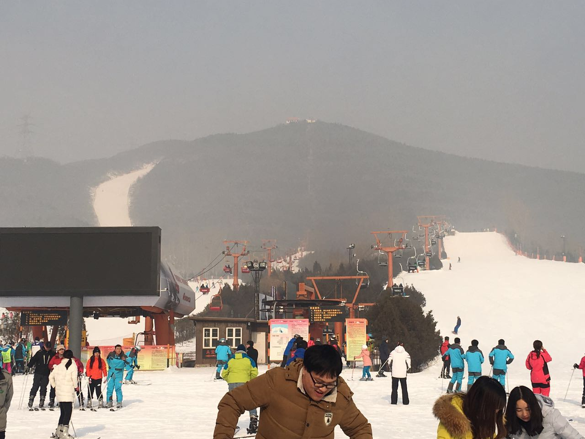

我是蒲公英的种子
微风轻轻一吹
我离开了亲爱的妈妈
飞啊飞啊
飞到哪里哪里就是我的家
2017来了！
谁能想象，新年第一天居然是在junying度过的。
和好友一块执勤，吃部队餐和他们一起庆祝元旦，K歌，台球，升级。。。
当然最主要的还是和好友闲聊，总结了一下2016，展望了一下2017
2016总的来说可圈可点，总体上总结为一个“稳”字
或好或差总算在新城市，新公司中站稳了脚跟
（。。此处省略若干字。。）
2017应该是最近几年来最关键的一年，因为谁知道这一年要发生什么
回来坐地铁的时候，迷迷糊糊的上了车。过了两站之后总感觉自己坐错了方向
拿出地图瞄了两眼，没看出所以然，然后就下了车换了个方向
坐了五六站之后，突然还不知道自己应该在哪个站下车，拿出手机
终于发现自己这次真的坐错了方向，第一次并没有错
正在看地图的推荐路线的时候，地铁到了新站，等到地铁关上门的时候，懵逼的发现应该就在这里换乘
正当自己决定下一站下了再回坐一站的时候，突然发现第一次应该换乘的地铁线
心想算了吧，哪有那么多回头路走，就直接坐下去换乘吧
上了换乘线，没想到两站后就到了第一次应该换乘的那个站
然后又回到了正确的道路上了
- 做决定的时候一定要深思熟虑，哪怕发现自己现在是错的；
- 错过了适当的站，不妨继续坚持一下，条条大路通北京，说不定有很好的补救措施；
- 当你不知道接下来该怎么做的时候，不妨再等等；
- 一定要知道自己去哪里，这样才知道怎么走；
- 每过一段时间，不妨看看自己离目的地的距离，走错了及时调整
你的目标在那看似遥不可及的山顶

但是不妨碍你完成当前阶段的那个小山坡